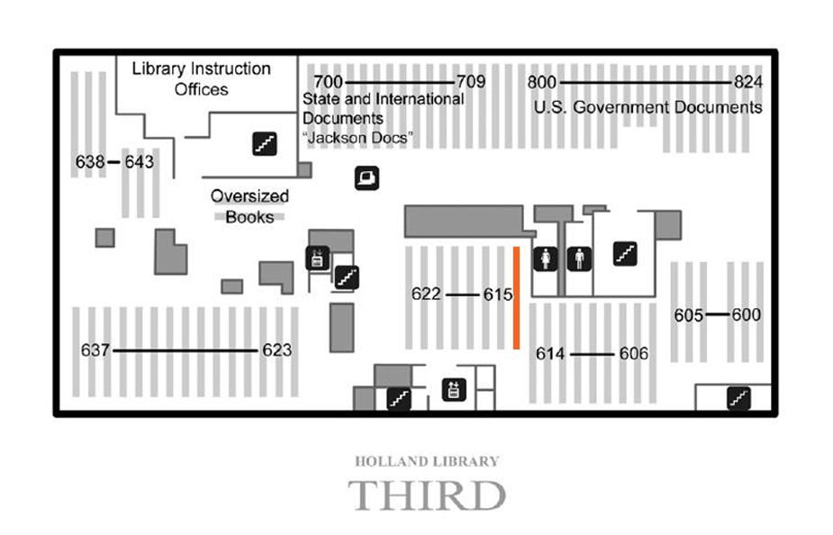

Basement Ground 1st 2nd 3rd Map
Mouse over the map of clickable areas to access images.

Stack #614-615
Subclass QH Natural history - Biology
Subclass QK Botany
Subclass QL Zoology
Subclass QM Human anatomy
Subclass QP Physiology
Subclass QR Microbiology
Subclass R Medicine (General)
Subclass RA Public aspects of medicine